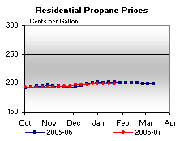
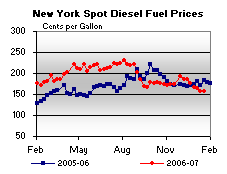
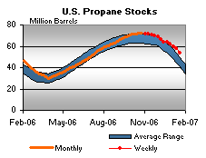

Released on January 24, 2007
(Next Release on January 31, 2007)
Safety Net
Only within the last few weeks are heating fuels markets finally feeling the effects of more typical winter weather following a wave of severe winter storms that have swept across many regions of the country. From the citrus groves in southern California that were severely damaged by freezing temperatures, to a large swath across the Plains States that was nearly paralyzed by several devastating ice storms, the effects of winter weather are finally being felt in many parts of the country that had previously basked in unseasonably warmer-than-normal temperatures almost from the start of the heating season. But what does the latest shift in weather patterns bode for heating fuels markets, particularly for propane, for the remainder of the heating season with the potential for the same type of weather over the next two months?
The most obvious benefit of the relatively mild temperatures experienced across nearly all of the major propane heating regions was the lack of any significant space heating demand that contributed to positioning U.S and regional propane inventories above their respective average ranges for this time of year (see Figure 7, in the Weekly Petroleum Status Report). Though temperatures in October were slightly below normal, November and December temperatures were well above normal in nearly all regions of the Nation, which had the effect of delaying any significant early season drawdown on propane inventories. With this delay, propane markets widened the inventory safety net, or cushion, for any potential late season surges in demand, likely softening any possible price spikes over this period.
Looking at inventory levels relative to a typical level is just one way to analyze the adequacy of inventories. Beginning with the November 22, 2006 issue of This Week In Petroleum (TWIP), the Energy Information Administration (EIA) introduced a new data series that provides another measure for evaluating the adequacy of inventory data. The new data series is actually an extension of the existing inventory table, which is now titled "Propane Stocks and Days of Supply." Instead of evaluating historical absolute inventory data in terms of the implied capability of current levels to buffer possible forward market activity, days-of-supply data enable an assessment of buffer capabilities based on both absolute inventory and current average demand levels. Days-of-supply is calculated by using the most current level of propane inventories divided by the most current four-week average demand for propane. The current data for propane shows 33.0 days-of-supply. By definition, days-of-supply do not take into account other sources of supply, i.e. imports and production, as the concept is intended to better measure the extent to which market needs can be met without more new supply. The 33.0 days-of-supply for propane inventories, as shown in the following graph, clearly shows the relatively deep safety net that now exists within current propane markets compared with crude oil and some major petroleum products for the same week over the past two years. However, it must be noted that comparisons of historical data for days-of-supply for propane are limited to April 30, 2004, due to the start of weekly EIA collection of propane supply/demand data at that time.
In addition, with relatively mild temperatures also reported in both Europe and Asia this winter until recently, global competition for propane supplies appears much less intense for this time of year. Consequently, this situation has acted to only further strengthen U.S. propane markets against any potential sustained surge in demand that may occur over the remaining course of the 2006-07 heating season. Thus, with adequate supplies on hand, the primary vulnerability remaining for propane markets at this time appear to be mostly logistical in nature.
Residential Heating Oil Prices Continue Their Fall
Residential heating oil prices decreased once more for the period ending January 22, 2007. The average residential heating oil price dropped by 1.8 cents per gallon last week to reach 233.3 cents per gallon, a decrease of 13.0 cents from this time last year. Wholesale heating oil prices increased 2.0 cents to reach 157.2 cents per gallon, a decrease of 29.9 cents compared to the same period last year.
The average residential propane price increased by 0.1 cent, reaching 199.3 cents per gallon. This was a decrease of 1.9 cents compared to the 201.2 cents per gallon average for this same time last year. Wholesale propane prices increased by 1.2 cents per gallon, from 93.2 to 94.4 cents per gallon. This was a decrease of 14.1 cents from the January 23, 2006 price of 108.5 cents per gallon.
Retail Gasoline and Diesel Prices Continue Downward Trend
Retail gasoline prices continued their decline, falling 6.4 cents to 216.5 cents per gallon for January 22, 2007. Prices are 17.1 cents per gallon lower than at this time last year. East Coast prices fell 5.9 cents to 220.3 cents per gallon. For the third consecutive week, the Midwest saw the largest regional decrease, with prices falling 8.5 cents to 199.2 cents per gallon. Prices there are now 29.0 cents per gallon lower than at this time last year. Gulf Coast prices were down 5.7 cents to 205.4 cents per gallon, while Rocky Mountain prices fell 4.1 cents to 215.8 cents per gallon. Prices for the West Coast were down 4.5 cents to 250.9 cents per gallon, but remain 12.3 cents per gallon higher than at this time last year.
Retail diesel fuel prices were also lower this week, decreasing 3.3 cents to 243.0 cents per gallon. Prices are 4.2 cents lower than at this time last year. All regions reported decreases. East Coast prices fell 1.6 cents to 242.1 cents per gallon. Midwest prices dropped 3.7 cents to 237.1 cents per gallon. The Gulf Coast saw a decrease of 3.0 cents to 236.1 cents per gallon, while Rocky Mountain prices fell 3.9 cents to 258.6 cents per gallon. Prices on the West Coast saw the largest decrease, falling 5.4 cents to 269.5 cents per gallon. Prices are still 8.7 cents per gallon higher than at this time last year.
Propane Inventories Down Sharply
Cold temperatures in many areas of the nation contributed to push propane inventories down sharply last week by about 4 million barrels, the largest weekly decline seen so far during the 2006-07 heating season (October through March). Over the past three weeks, the nation's primary propane supply has dropped by about 8.3 million barrels, a level that accounts for only about 60 percent of the most recent 5-year average monthly stockdraw for this month. As of January 19, 2007, propane inventories stood at an estimated 53.6 million barrels, a level that was narrowed in recent weeks to only 1.2 million barrels above the same week last year. Regional propane inventories were only moderately lower in the East Coast with a reported drop of 0.1 million barrels, but inventories in the Gulf Coast and Midwest regions reported much sharper declines that totaled 2.3 million barrels and 1.4 million barrels, respectively. The combined Rocky Mountain/West Coast regions reported an inventory decline of 0.2 million barrels last week, a sharp drop most likely from an increase in agricultural demand stemming from the cold temperatures affecting the citrus groves around Southern California. Propylene non-fuel use inventories reported a 0.2-million-barrel drop last week that accounted for a slightly higher 6.0 percent of total propane/propylene inventories compared with the prior week's 5.9 percent share.
Text from the previous editions of “This Week In Petroleum” is now accessible through a link at the top right-hand corner of this page.
| Retail Prices (Cents Per Gallon) | |||||||
|  | |||||||
| Retail Data | Changes From | Retail Data | Changes From | ||||
| 01/22/07 | Week | Year | 01/22/07 | Week | Year | ||
| Gasoline | 216.5 | Heating Oil | 233.3 | ||||
| Diesel Fuel | 243.0 | Propane | 199.3 | ||||
| Spot Prices (Cents Per Gallon) | |||||||||||||||||||||||||||||||||||||||
 |
 | ||||||||||||||||||||||||||||||||||||||
|
 |
||||||||||||||||||||||||||||||||||||||
| Stocks (Million Barrels) | |||||||
 |
|||||||
|  | |||||||
| Stocks Data | Changes From | Stocks Data | Changes From | ||||
| 01/19/07 | Week | Year | 01/19/07 | Week | Year | ||
| Crude Oil | 322.2 | Distillate | 142.6 | ||||
| Gasoline | 220.8 | Propane | 53.557 | ||||